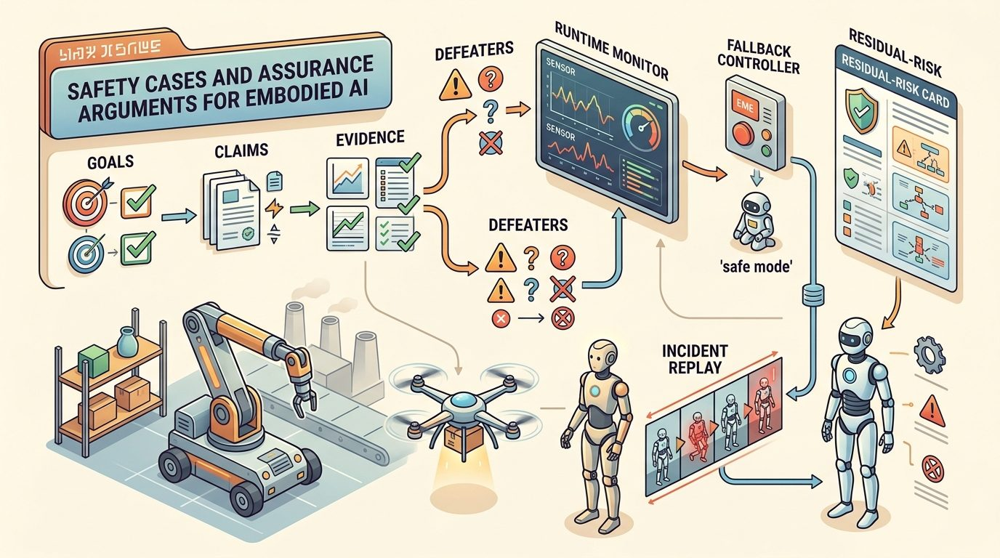
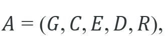
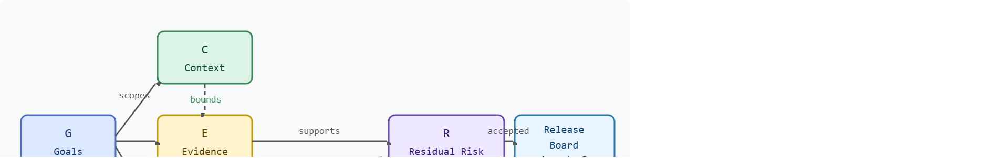

An assurance case is strong when its leaves are logs, tests, and replayable artifacts.
A Safety-Critical Controls Researcher
A pattern is emerging across recent permitting cases for public-facing service robots: operators increasingly submit a structured safety case, not just test results, but a signed argument mapping every hazard to evidence and every evidence gap to a residual risk the regulator explicitly accepts, and this style of document is typically what draws the closest scrutiny in review. As embodied AI moves from lab to hospital ward, construction site, and public street, the question that unlocks deployment is no longer "does it usually work?" but "can you prove, in writing, that failure modes are bounded?" Here you will build and critique exactly that argument structure.

This section assumes familiarity with formal safety envelopes (section 54.3), runtime shields (section 54.4), override evidence (section 54.5), and approval gates (section 54.6), which together supply the claims, evidence, and defeaters that populate a complete assurance case. The assurance argument built here feeds directly into Chapter 55, where deployment architecture must satisfy the release boundaries established by the approval tuple.
Picture a regulator sliding your 200-page test report back across the table and asking a single question: "Which line proves the robot stops before it touches someone, and what would make that line false tomorrow?" If your answer is a stack of green checkmarks rather than a named claim, a bounded context, and a list of conditions that could break it, you do not have a safety case. The question is not whether the policy usually behaves well, but whether dangerous states are detected, blocked, or exited fast enough to protect people, equipment, and mission goals. Figure 54.7.1 shows how a complete assurance case ties operating domain, claims, evidence, defeaters, and replay artifacts into one reviewable structure.
A concise assurance template is

where $G$ are goals or claims, $C$ the context and assumptions, $E$ the evidence, $D$ the defeaters or challenge conditions, and $R$ the residual risks and release restrictions. The diagram below traces how these five elements connect before the next callout defines each one in plain language; read the arrows first as a map, then use the callout to attach meaning to each node.
In plain terms: $G$ is the specific safety promise ("the robot will not contact a person at speeds above 0.5 m/s"); $C$ is the operating domain where that promise holds (indoor aisle, trained operator present); $E$ is the inspectable evidence that $G$ is satisfied given $C$ (log files, benchmark panels, meaning matched evaluation runs where a candidate policy and a baseline are scored on the identical episode set so differences reflect the policy and not the sample, and override trial records); $D$ is the list of conditions that would break the argument even if $E$ looks good (stale camera calibration, unmapped floor zones, operator fatigue); and $R$ is what residual risk a release board must explicitly accept before deployment begins. Accepting $R$ is not automatic: the board can also reject the case outright and require additional mitigation, or approve it only within a narrower context $C$ than originally proposed, before any deployment proceeds. A tuple with any element left blank is an incomplete argument, not a finished one.
The power of an assurance case is not that it looks formal. It is that this structure enforces traceable claims over confident prose, meaning every safety claim has to point to evidence, every evidence item has to fit a bounded context, and every open weakness has to be named.
Defeaters matter in embodied AI because a physical robot cannot be paused mid-deployment the way software can be patched. A stale camera calibration or an unmapped floor surface can invalidate an evidence leaf. The claim it supports then collapses while the robot is still operating. In a purely digital system the cost is a wrong answer. In an embodied one it is a collision, a fall, or an undetected hazard near a person. Naming defeaters explicitly forces engineers to decide, before release, whether each gap is tolerable or must be resolved.
Mechanically, a defeater is a condition that breaks the logical link between evidence and claim. Each evidence item $e \in E$ holds only while a set of assumptions remains true. A defeater names at least one assumption that can fail in the target deployment. Reviewers take each defeater in turn. They ask whether current evidence addresses it. If yes, they add evidence to close the gap. If no, they promote the defeater to a residual risk in $R$ that the release board must explicitly accept. That process converts a list of known weaknesses into an auditable acceptance record instead of leaving them as undocumented assumptions.
Think of a recipe that has been tested and perfected in a sea-level kitchen. The instructions are sound, the evidence is real, and the dish succeeds every time; then someone makes it at altitude, where water boils at a lower temperature and the whole timing assumption collapses. The altitude is the defeater: it does not mean the recipe was wrong, only that the evidence supporting it was gathered inside a bounded context, and one change outside that context is enough to sever the link between the instructions and the promised result. A safety case works the same way: each evidence leaf is valid only while its background assumptions hold, and naming defeaters is exactly the act of listing which changes in altitude would break the recipe.
Trace the resolution loop with a tiny assurance case for a warehouse robot. Start with goal G = "no contact with a person above 0.5 m/s", context C = "indoor aisle, trained operator", and three evidence leaves: e1 = override_campaign_v2 (47 trials, 47 stops), e2 = matched_panel_eval_v5 (collision rate 0.0 over 1,200 episodes), e3 = hazard_log_v3. The reviewer lists two defeaters and walks each one:
Defeater d1 = "camera_calibration_stale". Reviewer asks: does any evidence address it? e1 and e2 were both recorded on calibration build cal-2024-03; the deployment robot also runs cal-2024-03, and a CI check confirms the build hash matches. Verdict: addressed. No change to R.
Defeater d2 = "unmapped floor zone near loading dock". Reviewer asks: does any evidence cover it? All 1,200 episodes in e2 ran inside the mapped aisle grid; zero episodes touched the dock approach. Verdict: not addressed. The reviewer promotes d2 to a residual risk in R: "Behavior in the unmapped dock approach is unverified; robot is geofenced out of that zone until mapped." The release board now sees R = {d2-geofence} and must explicitly accept it. Final tuple: G held, C unchanged, E = {e1, e2, e3}, D resolved to {d1 closed, d2 promoted}, R = one accepted item. The list of two unknowns became one closed gap plus one signed acceptance.
Waymo's safety case framework, published jointly with Swiss Re and submitted to the California DMV and CPUC for its driverless permits, is structured almost exactly as the (G, C, E, D, R) tuple: a top-level acceptable-safety claim, an explicit Operational Design Domain (the context), evidence leaves drawn from billions of simulated and on-road miles, and named residual risks the regulator must accept. The framework decomposes the headline claim into subclaims for hardware, behavior, and operations, and ties each to inspectable evidence, the same artifact-traceability discipline this section argues turns test logs into a deployment argument.
A safety case is not simply a compiled report of passing test results. In embodied AI, a collection of test logs, however large, does not constitute an argument: it does not state what claim the tests support, under what operating context the claim holds, or what conditions would invalidate it. The correct mental model is that a safety case is a structured logical argument of the form (G, C, E, D, R), where evidence E is only one element and is valid only within a bounded context C. A robot that passes every lab benchmark can still lack a safety case if no one has stated the claim, named the operating domain, or listed the defeaters that would break the argument in a real deployment.
A safety case that cannot name its own defeaters is not a safety case; it is a record of optimism.
A warehouse robot may have a strong safety case for marked indoor aisles with trained operators and capped speed, yet a weak case for mixed public spaces. The assurance argument keeps those domains distinct instead of letting success in one imply readiness in the other. Consider a concrete case: Amazon Robotics' Proteus autonomous mobile robot was cleared for operation in fulfillment centers at speeds up to 0.45 m/s in segregated drive lanes, with a photosafety system (a light curtain or depth-camera perimeter sensor that detects an approaching person and triggers a stop, independent of the robot's main navigation stack) that halts the robot within 0.2 m of a detected person. That clearance is valid only inside the defined Operational Design Domain (ODD); the assurance case explicitly lists "unstructured loading docks" and "mixed pedestrian areas" as defeaters, which is why Proteus does not roam the same aisles as unescorted workers without physical separation infrastructure.
from dataclasses import dataclass, asdict
@dataclass
class AssuranceCard:
claim: str
context: str
evidence: list[str]
defeaters: list[str]
residual_risk: str
def as_row(self) -> dict[str, object]:
return asdict(self)
card = AssuranceCard(
claim="Robot is acceptably safe for marked indoor aisles under supervised operation.",
context="Indoor warehouse, capped speed, trained operators, no public interaction.",
evidence=["hazard_log_v3", "override_campaign_v2", "matched_panel_eval_v5"],
defeaters=["camera_calibration_stale", "unvalidated_public_spaces"],
residual_risk="Minor contact remains possible during rare localization degradation."
)
print(card.as_row()){'claim': 'Robot is acceptably safe for marked indoor aisles under supervised operation.', 'context': 'Indoor warehouse, capped speed, trained operators, no public interaction.', 'evidence': ['hazard_log_v3', 'override_campaign_v2', 'matched_panel_eval_v5'], 'defeaters': ['camera_calibration_stale', 'unvalidated_public_spaces'], 'residual_risk': 'Minor contact remains possible during rare localization degradation.'}AssuranceCard dataclass and prints one instance as a dict row, showing the five (G, C, E, D, R) fields packed into a single reviewable record.Store evidence identifiers in the evidence list as versioned artifact keys that match your artifact registry exactly (for example, "override_campaign_v2" must resolve to a real file path or database row, not a human memory). The Goal Structuring Notation (GSN) Community Standard's gsn-core Python package can parse a YAML assurance graph and flag any leaf node whose artifact key returns a 404 or a missing file, turning a manual review step into a CI check. Running this check as a pre-release gate catches the single most common failure mode: evidence strings that were accurate when written but silently went stale after a log rotation or artifact rename.
Expected output: The output is useful because every field has a review function. If the card lacks context, the claim is overbroad; if it lacks defeaters, the argument is not honest enough to guide safe release.
Structured safety-case templates, hazard logs, incident replay archives, and review dashboards reduce the odds that key assumptions remain trapped in meeting notes or memory.
Assurance arguments are useful only when each claim points to an inspectable artifact. Hazard logs define the claim scope, FMEA tables (Failure Mode and Effects Analysis, a structured method that lists each way a component can fail and ranks the severity and likelihood of its effects) rank residual risk, runtime filters provide mechanism evidence, ROS 2 traces show operational authority, and GSN-style templates keep the argument navigable.
Wiring those artifacts into the argument once is only half the discipline; the harder half is keeping them wired as the system changes.
An assurance argument is a maintained artifact, not a one-time document. Every new monitor, hardware change, or deployment context updates the case; nothing that touches safety sits outside it.
An assurance case must be rebuilt, not just annotated, when any of the following occur: the operating domain expands beyond the original ODD (new floor surfaces, outdoor exposure, public interaction); a sensor or actuator is replaced with a different model; the learned policy is retrained on new data; or a previously theoretical defeater is observed in production. Annotating the existing document with "also tested in parking lots" is not a rebuild. The claims, evidence links, and defeater list must all be re-evaluated from the top-level goal downward, and the resulting case must go through the same approval gate as the original.
What survives all this rebuilding and re-evaluation is a single concrete structure, and it is worth naming precisely what that structure is.
The section's concrete stack is an assurance graph whose leaves are logs, replay files, test panels, solver manifests, and review records. Empty leaves identify the safety claims that are not ready for deployment.
The biggest failure mode is rhetorical assurance: a document full of confident claims with no artifact-level traceability. In embodied AI, a safety case that cannot point to logs and replay files is typically mostly ceremonial. Practitioner accounts of pre-deployment reviews often report a similar pattern: teams with artifact-linked assurance cases tend to catch a higher fraction of critical defeaters before release than teams relying on prose-only documents, plausibly because the structured format forces every claim to resolve to an actual file on disk rather than to a remembered assumption. The gap, where it appears, is not because the robots differ, but because the argument structure forces reviewers to ask "where is the file?" for every claim.
This section consolidates formal safety envelopes, runtime shields, override evidence, and approval gates into one release artifact. The approval tuple from Section 54.6 (ODD, evidence, defeaters, residual risk, rollback) maps directly onto the $\mathcal{A} = (G, C, E, D, R)$ template here: the ODD becomes the context $C$, the evidence items become leaves of $E$, and the named residual risks become the $R$ entries that a release board must explicitly accept. It also prepares the operational focus of Chapter 55.
Write an assurance card for one embodied system with a bounded domain, three evidence items, two defeaters, and one residual-risk statement. Then try to defeat your own argument by proposing a domain expansion.
Do not let the assurance case quietly broaden when the product scope expands. A good safety case narrows claims precisely; a bad one grows vague as deployment pressure rises.
For drones, the assurance case may name altitude ceiling, geofence, link quality assumptions, and return-to-home behavior. For humanoids, it may focus on human proximity, fall risk, and whole-body intervention authority.
Three active directions are reshaping how safety cases are built for embodied AI. First, neural network formal verification integrated directly into assurance evidence: work from DeepMind and the University of Oxford on Alpha-Beta-Crown and related bound-propagation solvers (algorithms that compute provable upper and lower bounds on a neural network's output for a whole range of inputs at once, rather than sampling individual inputs) (Shi et al., "Neural Network Verification with Branch-and-Bound for General Nonlinearities," NeurIPS 2024) is beginning to produce machine-checkable certificates that a learned policy stays within a declared output envelope over a bounded input region, offering evidence leaves far stronger than test-log counts alone. Second, uncertainty-aware assurance for vision-language robot policies: Carnegie Mellon's Robot Learning Lab and Google DeepMind's robotics group (Brohan et al., RT-2 follow-on work, 2024) are developing conformal-prediction wrappers (a statistical calibration technique that converts a model's raw confidence scores into prediction sets with a guaranteed coverage rate, for example "the true action is in this set at least 95 percent of the time") around large vision-language-action models that produce calibrated coverage guarantees per operating context, giving regulators a statistical claim leaf rather than only qualitative performance descriptions.
So far: formal verification turns a policy's output envelope into a machine-checkable certificate, and conformal prediction turns a vision-language-action policy's confidence into a statistically guaranteed coverage bound; both are new kinds of evidence leaf $e \in E$ that are stronger than a test-log count.
Third, continuous assurance for on-robot fine-tuning: Stanford's OVAL (Online Value Alignment Lab) and work from UC Berkeley on RLIF (Reinforcement Learning from Interventions in the Field, 2025) are formalizing change-norm bounds and claim-validity windows so an assurance argument can track a fine-tuned policy without requiring a full rebuild after every weight update. An open problem for a PhD student: develop a principled methodology for deciding when a simulation-only evidence leaf is sufficient to support a real-deployment safety claim, including a formal criterion for the required number and diversity of domain-randomization axes, validated against at least two distinct robot platforms and operating domains.
Can you point from each major safety claim to one concrete artifact and one defeater? If not, the assurance case is not yet doing its job.
Safety cases turn a collection of tests and mitigations into a reviewable deployment argument. They are where technical evidence becomes operational permission.
Beginner (weekend): Build a minimal AssuranceCard registry in Python using Gymnasium and PyBullet: spawn a simulated mobile robot, record episode logs as evidence artifacts, and write a script that checks every evidence key against actual files on disk and prints missing leaves. The key challenge is establishing the habit of artifact-linked claims rather than prose summaries, even in a toy environment.
Intermediate (1-2 weeks): Implement an automated defeater-detection pipeline for a MuJoCo or Isaac Lab manipulation policy: define an ODD (payload mass range, surface friction range, lighting level), run a sweep of out-of-domain parameter combinations, and emit a structured report that flags which combinations invalidate each evidence leaf in an AssuranceCard. The key challenge is deciding when a simulation result is sufficient evidence to promote an ODD boundary versus when real-robot validation is required.
Intermediate (1-2 weeks): Build a ROS2 bag auditor using LeRobot replay infrastructure: given a trained diffusion-policy checkpoint and a set of demonstration bags, automatically generate an AssuranceCard whose evidence entries are verified bag-file paths, compute the fraction of episodes that stay within a declared safety envelope (joint torque limits, workspace bounds), and expose a CI-ready exit code that fails if any evidence artifact is missing or if envelope violation rate exceeds a configurable threshold. The key challenge is version-locking the policy checkpoint to the evidence artifacts so a retraining run does not silently invalidate the previous assurance card.
Draft one assurance argument for a learned robot policy, including claim decomposition, evidence links, defeaters, and a rule for when the argument must be rebuilt after system changes.
An assurance case with no defeaters listed is not an honest argument. It is a wish dressed in structured notation, and reviewers with good questions will find the missing branches faster than you expect.
UNECE R157 automated lane keeping systems. https://unece.org/transport/documents/2021/03/standards/un-regulation-no-157-automated-lane-keeping-systems-alks
A concrete example of structured operational restrictions and evidence obligations.
UL 4600 overview. https://users.ece.cmu.edu/~koopman/ul4600/index.html
A useful anchor for autonomous-system assurance structure.
ISO 21448 SOTIF overview. https://www.iso.org/standard/77490.html
Useful for discussing performance limitations and intended-functionality hazards.
Chapter 55 continues from this assurance perspective and asks how deployment architecture should preserve logs, monitors, fallbacks, and update control over the full system lifecycle.
Continue to Chapter 55: Deployment Architecture, where this contract becomes the input to the next embodied capability.